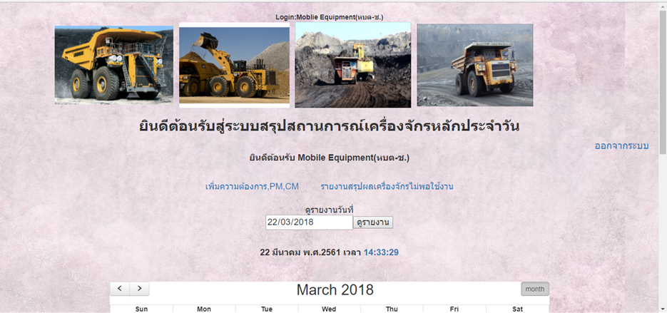
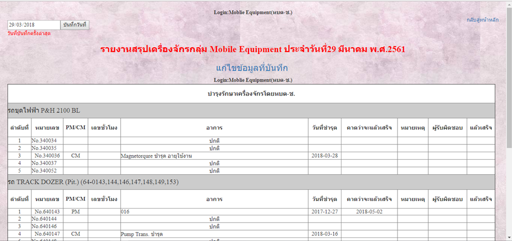
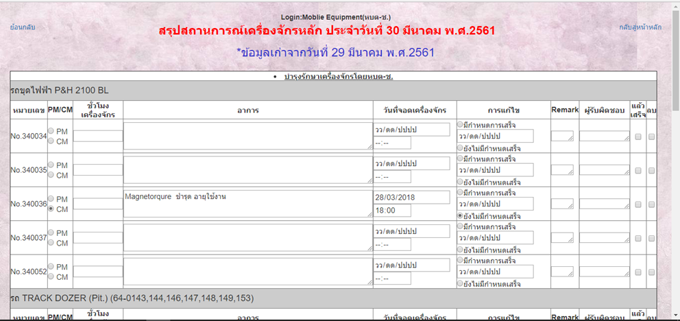
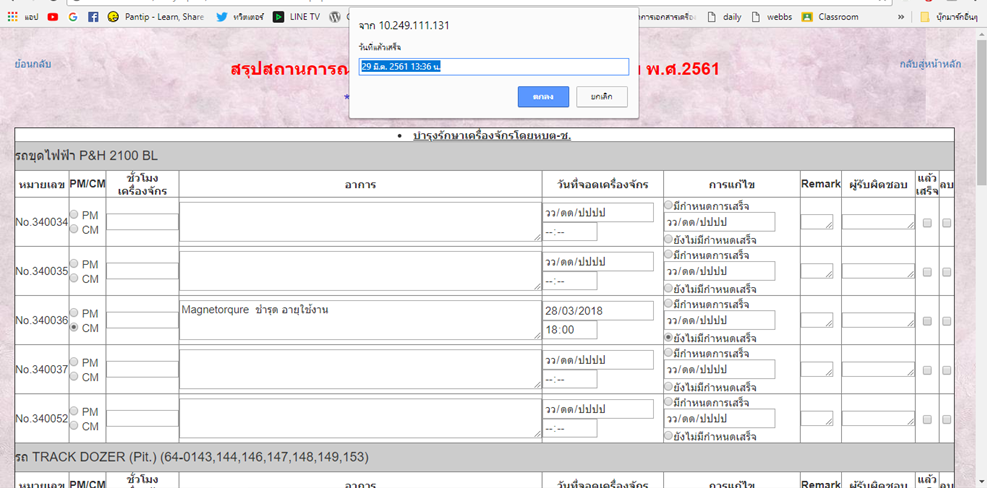
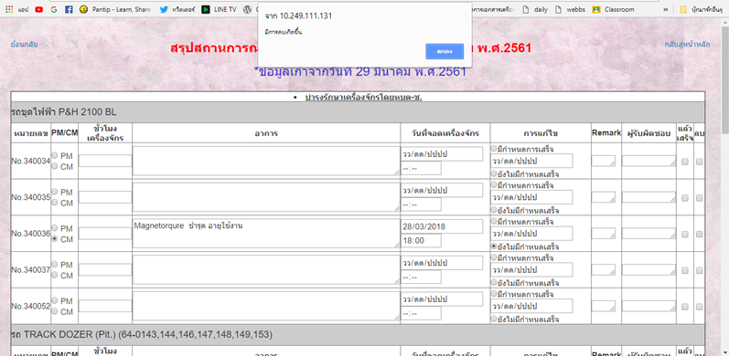
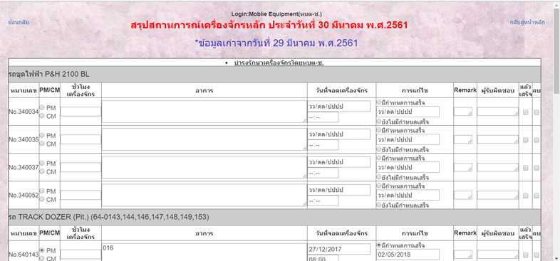

วิธีการเพิ่มเครื่องจักร

1.ทำการเพิ่มเครื่องจักรโดยทำการคลิกที่ “เพิ่มความต้องการ PM,CM”

2.เลือกวันที่ต้องการ โดยพิมพ์หรือเลือกแบบเป็นปฏิทินทางมุมบนทางซ้ายของหน้าเพจ และทำการบันทึกวันที่

3.โดยข้อมูลจะเป็นของวันที่บันทึกล่าสุดและจะสามารถลบข้อมูลเก่าก่อนการบันทึกใหม่ได้
4.เพิ่มเครื่องจักรที่ชำรุดตามความต้องการ *ถ้าเครื่องจักรชนิดใดไม่ได้ทำการกรอกข้อมูล PM,CM จะถือว่าเครื่องจักรนั้นปกติ

5.ถ้ากดเลือกในช่อง แล้วเสร็จ โปรแกรมจะทำการโชว์ป๊อปอัพและแสดงวันเวลาในขณะที่ทำ *เมื่อทำการบันทึกวันที่แล้วเสร็จ ถ้าหากกลับมาแก้ไขอีกครั้งจะขึ้นแถบว่าแล้วเสร็จ
 
6.ถ้าคลิกที่คำว่า ลบ จะมีป๊อปอัพโชว์ว่ามีการลบเกิดขึ้นและในช่องที่ทำการกรอกข้อมูลไว้นั้นจะหายไป
|